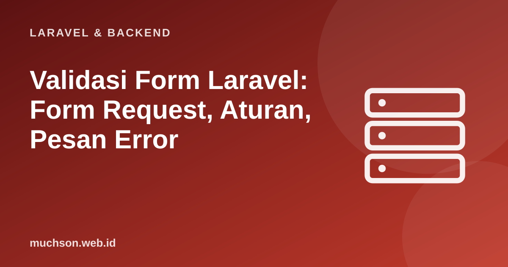

Beranda › Artikel › Laravel & Backend
Laravel & BackendValidasi Form Laravel: Form Request, Aturan, Pesan Error
Setiap data dari pengguna harus dianggap tidak dapat dipercaya: bisa salah ketik, bisa kosong, bisa juga sengaja dirancang untuk merusak. Validasi adalah gerbang pertama. Laravel memberi sistem validasi yang ekspresif: satu baris aturan per kolom, pesan galat otomatis, dan pengembalian ke form dengan isian lama.
Sebaiknya sudah paham: dasar Laravel, controller dan routing

Setelah membaca dan mencoba materi ini, Anda mampu:
- menulis validasi dengan $request->validate dan aturan umum
- memindahkan aturan ke Form Request
- menampilkan galat dan mempertahankan isian lama di Blade
- menyesuaikan pesan, nama atribut, dan bahasa Indonesia
- memahami validasi unik, kondisional, dan validasi sisi server sebagai kewajiban
Kode PHP/Laravel di artikel ini ditampilkan sebagai contoh yang mengikuti dokumentasi Laravel (versi 11 dan seterusnya, PHP 8.2 atau lebih baru). Bagian "cara kerja di balik layar" dijalankan sungguhan dengan Python atau JavaScript agar konsepnya dapat dibuktikan.
Validasi di controller
<?php
public function store(Request $request)
{
$data = $request->validate([
'nama' => ['required', 'string', 'min:3', 'max:100'],
'surel' => ['required', 'email', 'unique:pengguna,surel'], // belum dipakai di tabel pengguna
'umur' => ['required', 'integer', 'between:17,100'],
'kota' => ['nullable', 'string', 'max:50'],
'setuju' => ['accepted'], // harus dicentang
'foto' => ['nullable', 'image', 'mimes:jpg,png,webp', 'max:2048'], // KB
]);
Pengguna::create($data); // $data hanya berisi kolom yang lolos validasi
return redirect()->route('pengguna.index')->with('sukses', 'Data tersimpan.');
}| Aturan | Arti |
|---|---|
| required / nullable | Wajib diisi / boleh kosong |
| string, integer, numeric, boolean, array | Tipe data |
| min:n, max:n, between:a,b | Panjang (string), nilai (angka), ukuran (berkas KB), jumlah (array) |
| email, url, date, uuid | Format |
| unique:tabel,kolom | Belum ada di basis data |
| exists:tabel,kolom | Harus ada di basis data (misalnya kunci asing) |
| confirmed | Harus ada kolom {nama}_confirmation yang sama (kata sandi) |
| in:a,b,c / Rule::enum() | Salah satu nilai tertentu |
| regex:/pola/ | Cocok dengan ekspresi reguler |
Menampilkan galat di Blade
<form method="POST" action="{{ route('pengguna.store') }}" novalidate>
@csrf {{-- token CSRF wajib untuk form POST --}}
<label for="nama">Nama</label>
<input id="nama" name="nama" value="{{ old('nama') }}" {{-- isian lama saat validasi gagal --}}
aria-invalid="{{ $errors->has('nama') ? 'true' : 'false' }}">
@error('nama')
<p role="alert" class="galat">{{ $message }}</p>
@enderror
<label for="surel">Surel</label>
<input id="surel" type="email" name="surel" value="{{ old('surel') }}">
@error('surel') <p role="alert" class="galat">{{ $message }}</p> @enderror
<button type="submit">Daftar</button>
</form>Form Request: aturan di kelas sendiri
Untuk form besar atau aturan yang dipakai ulang, pindahkan validasi ke kelas khusus agar controller tetap tipis.
<?php
// php artisan make:request SimpanPenggunaRequest
namespace App\Http\Requests;
use Illuminate\Foundation\Http\FormRequest;
use Illuminate\Validation\Rule;
class SimpanPenggunaRequest extends FormRequest
{
public function authorize(): bool
{
return true; // atau periksa hak akses, mis. $this->user()->can('buat-pengguna')
}
public function rules(): array
{
$pengguna = $this->route('pengguna'); // null saat membuat baru, objek saat mengubah
return [
'nama' => ['required', 'string', 'min:3', 'max:100'],
'surel' => ['required', 'email', Rule::unique('pengguna', 'surel')->ignore($pengguna?->id)],
'peran' => ['required', Rule::in(['admin', 'editor', 'tamu'])],
];
}
public function messages(): array
{
return [
'nama.required' => 'Nama wajib diisi.',
'surel.unique' => 'Surel ini sudah terdaftar.',
];
}
public function attributes(): array
{
return ['surel' => 'alamat surel']; // dipakai pada pesan bawaan: "alamat surel wajib diisi"
}
}
// di controller: validasi berjalan otomatis sebelum method dipanggil
public function store(SimpanPenggunaRequest $request)
{
Pengguna::create($request->validated());
return back()->with('sukses', 'Tersimpan.');
}Bahasa Indonesia
php artisan lang:publish # menerbitkan berkas bahasa ke folder lang/
# unduh terjemahan komunitas (mis. paket laravel-lang) ke lang/id, lalu di .env:
# APP_LOCALE=id
# APP_FALLBACK_LOCALE=enCara kerja di balik layar
Sistem validasi pada dasarnya mengurai string aturan ("between:17,100"), menjalankan fungsi pemeriksa per kolom, dan mengumpulkan galat. Mini versinya (JavaScript):
const aturan = {
required: v => (v === undefined || v === null || String(v).trim() === '') ? 'wajib diisi' : null,
email: v => /^[^\s@]+@[^\s@]+\.[^\s@]{2,}$/.test(v) ? null : 'format tidak valid',
integer: v => Number.isInteger(Number(v)) && String(v).trim() !== '' ? null : 'harus bilangan bulat',
min: (v, n) => String(v).length >= Number(n) ? null : 'minimal ' + n + ' karakter',
between: (v, a, b) => Number(v) >= Number(a) && Number(v) <= Number(b) ? null : 'harus antara ' + a + ' dan ' + b,
};
function validasi(data, skema) {
const galat = {};
for (const [kolom, daftar] of Object.entries(skema)) {
for (const teks of daftar.split('|')) {
const [nama, params] = teks.split(':');
const pesan = aturan[nama](data[kolom], ...(params ? params.split(',') : []));
if (pesan) { (galat[kolom] ??= []).push(kolom + ' ' + pesan); break; } // berhenti di galat pertama per kolom
}
}
return galat;
}
const skema = { nama: 'required|min:3', surel: 'required|email', umur: 'required|integer|between:17,100' };
console.log(validasi({ nama: 'Al', surel: 'al@x', umur: '15' }, skema));
console.log(validasi({ nama: 'Ani', surel: 'ani@contoh.id', umur: '20' }, skema));{
nama: [ 'nama minimal 3 karakter' ],
surel: [ 'surel format tidak valid' ],
umur: [ 'umur harus antara 17 dan 100' ]
}
{}Validasi di browser (atribut HTML, JavaScript) hanya untuk kenyamanan. Validasi server wajib, karena penyerang dapat mengirim permintaan langsung tanpa melewati form Anda. Dan ingat: validasi bukan pengganti pemeriksaan hak akses (otorisasi): "data ini valid" berbeda dari "pengguna ini boleh melakukannya".
1. Tulis aturan untuk kolom kata sandi: wajib, minimal 8 karakter, dan harus dikonfirmasi.
"sandi" => ["required", "min:8", "confirmed"] dengan input sandi_confirmation.2. Ubah pesan galat unik surel menjadi bahasa Indonesia.
"surel.unique" => "Surel ini sudah terdaftar." di method messages() Form Request.3. Apa bedanya validate() dan validated()?
4. Mengapa galat 419 muncul saat mengirim form POST?
- $request->validate([...]) atau Form Request memvalidasi dan mengembalikan hanya data yang lolos.
- Aturan umum: required, string, email, unique, exists, between, confirmed, image.
- Blade: @error, $message, old(); sertakan @csrf pada form POST.
- Pesan dan atribut dapat disesuaikan; validasi server wajib dan berbeda dari otorisasi.
Tanya jawab
Bagaimana validasi untuk API (JSON)?
Bagaimana membuat aturan kustom?
Apakah ada validasi bersyarat?
Referensi
- Laravel: Validation
- Laravel: Available Validation Rules
- OWASP: Input Validation Cheat Sheet
- Laravel Documentation